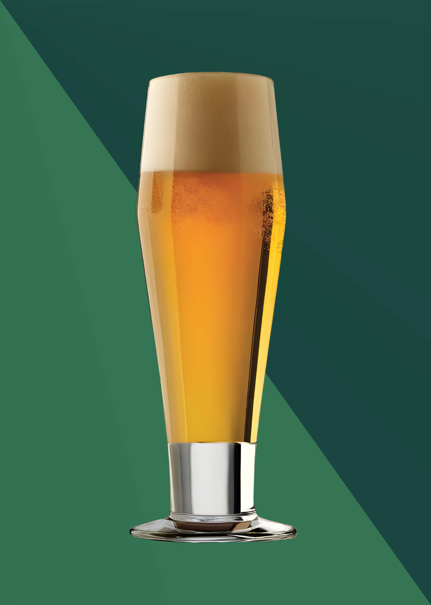
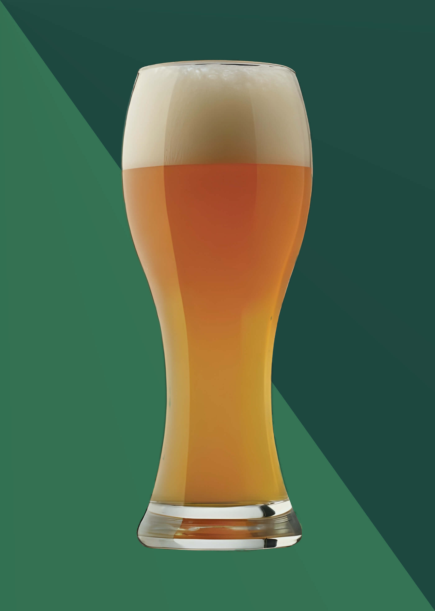
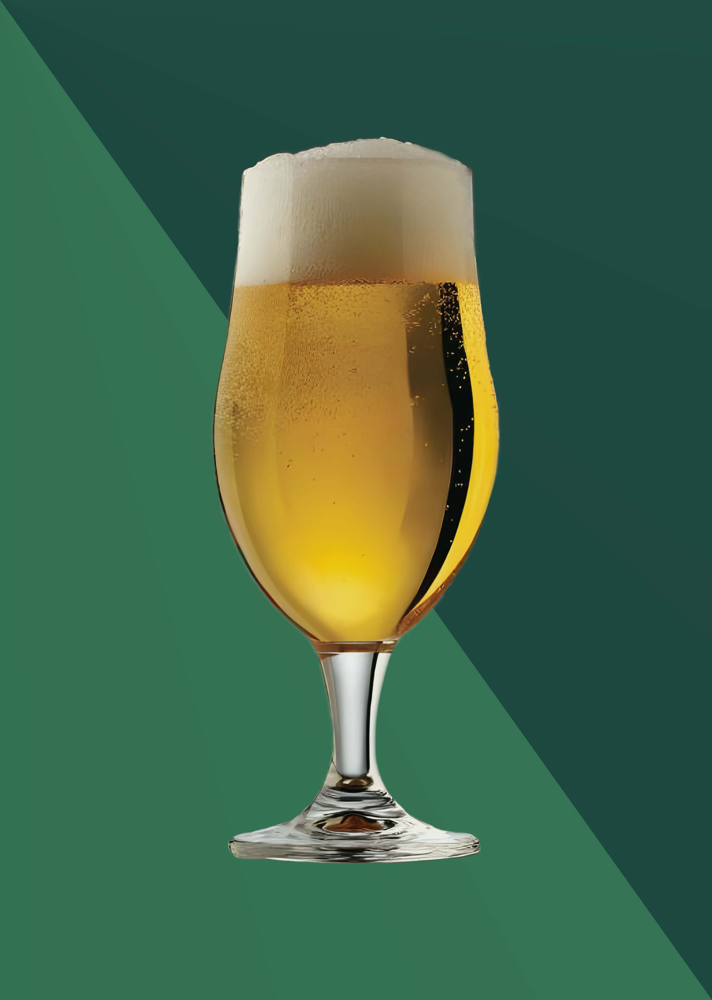
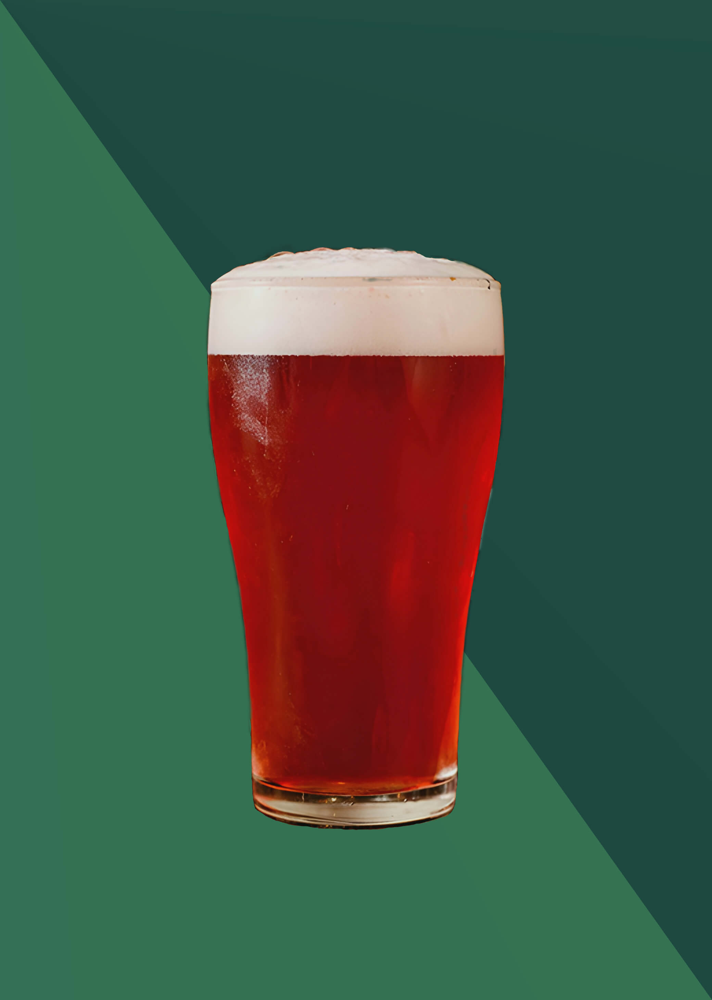
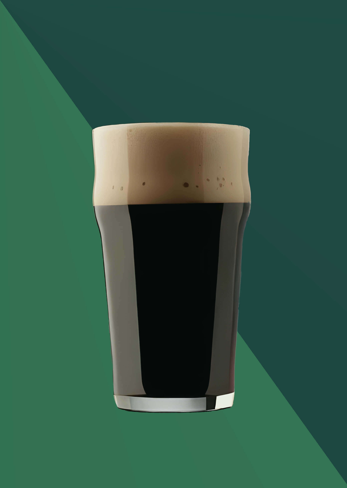

Y tú, ¿Cuál Eliges?
Blonde Ale
- Es una bella cerveza dorada, de cuerpo redondo, sabor tardío a maltoza debido a su cereal y trigo, de espuma blanca y cremosa de buena duración. Es de amargor moderado y aroma frutal, con notas a piña, distintivo, espuma blanca, cremosa y de buena duración.
- Lúpulos: Magnum, Perle y Mandarina Bavaria.
- ABV: 5,7%
Neipa Beer
- Es una versión de la IPA que nace en la costa este de Estados Unidos. Se caracteriza por ser turbia, sedosa en boca, con amargor mínimo debido a adiciones tardías de lúpulo, con sabor y aroma predominantemente a frutas tropicales y cítricas.
- Lúpulos: Galaxy, Mosaic y Amarillo.
- ABV: 5,8%
Black Ipa

- Una singular cerveza con la apariencia de una cerveza negra, pero con muy poco sabor a tostado, el lúpulo es el principal protagonista, con inconfundibles notas a pino y a cítricos. Tiene un volumen alcohólico respetable, gran cuerpo, espuma cremosa y un amargo intenso. Para los amantes de las IPAs sin importar el color.
- Lúpulos: Nugget, Centennial y Cascade.
- ABV: 6,9%
Pilsner
- Esta variedad es una cerveza enormemente atenuada, su fina levadura otorga un perfil de fermentación muy limpio, bien balanceada y altamente carbonatada, cuerpo liviano, amargor suave y especiado, crujiente sabor a cereal, excelente transparencia e inconfundible espuma blanca.
- Lúpulos: Perle y Hallertau Tradition.
- ABV: 4,5%
Catharina Sour Berry
- De cuerpo ligero y carbonatación media a alta. Con un buen toque de acidez dado por la adición de frambuesa fresca, sin ser agresiva o astringente. El sabor a malta es un poco ausente, pero provee un leve sabor a granos o pan. De final seco con un retrogusto ácido, limpio y frutal.
- Lúpulos: Magnum y Tettnang.
- ABV: 4.8%
Irish Stout
- Elaborado por primera vez en 1821. De espuma café y color casi negro, tiene marcadas notas a café y algo de chocolate, en el paladar se siente un agradable cuerpo con una muy leve acidez proveniente de los granos tostados, el amargor es apreciable pero balanceado con el sabor tostado y el nivel alcohólico.
- Lúpulos: Perle y Willamett.
- ABV: 5,8%
La carta está abierta a modificaciones de acuerdo a la incorporación de nuevos sabores producidos por la casa, así como también una advertencia en caso falta de stock.
Algunos ejemplares no poseen aún su respectivo envasado en lata, pero podés pasar por una pinta y llevarte o recargar tu "Growler".